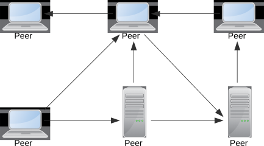
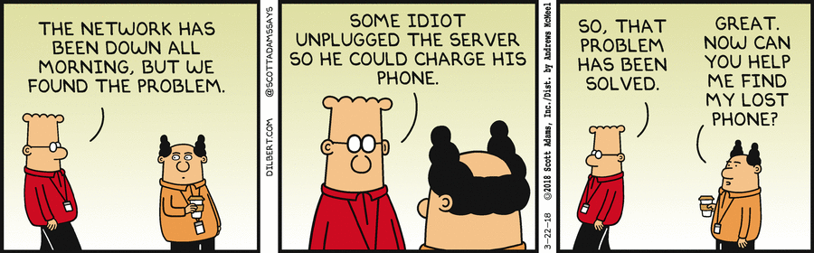
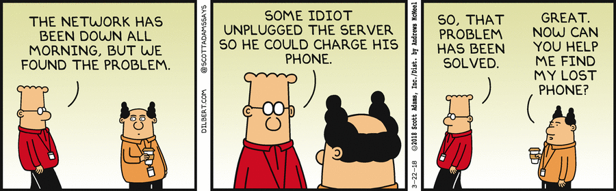

Als System (altgriechisch sýstēma „aus mehreren Einzelteilen zusammengesetztes Ganzes“) wird im Allgemeinen ein abgrenzbares, natürliches oder künstliches „Gebilde“ bezeichnet, das aus verschiedenen Komponenten mit unterschiedlichen Eigenschaften besteht, die aufgrund bestimmter geordneter Beziehungen untereinander als gemeinsames Ganzes betrachtet werden (können).
Wikipedia zum Begriff „System”


 Sämtliche Internetdienste
Sämtliche Internetdienste
Bildnachweis: Pixabay: ribkhan
Bildnachweis: Pixabay: Bru-nO
 Forschung und Wissenschaft
Forschung und Wissenschaft
Bildnachweis: Pixabay: WikiImages
 Video-on-Demand
Video-on-Demand
Bildnachweis: Unsplash: jenskreuter
 Autonomes Fahren
Autonomes Fahren
 Internet of Things
Internet of Things
Bildnachweis: Pixabay: haus_automation
| üíø | Server | Langlaufendes Programm, das einen Dienst zur Verf√ºgung stellt. Wartet darauf, bis sich ein Client mit ihm verbindet. |
| üíø | Client | Kurzlebiges Programm, das den Dienst nutzt. Stellt hierf√ºr eine Verbindung zum Server her. |
| üíø | Peer | Spezielles Programm, das sowohl Client als auch Server ist. |
| üñ• | Ô∏èHost | Der Rechner, auf dem die Software l√§uft. Oft sagen die Leute ‚ÄûServer‚Äù und meinen damit den ‚ÄûHost‚Äù. |
Client/Server-Architektur

Peer-to-Peer-Architektur
Beschreibung
Dies ist die einfachste Architektur von allen. Sie besteht lediglich aus einem Server, der einen Dienst anbietet und den Clients, welche den Dienst konsumieren. Sehr oft kommt dabei ein synchrones, den Client blockierendes Request/Reply-Verfahren zum Einsatz, das besonders einfach zu programmieren ist. Technisch gesehen ist dies aber kein Muss, da Sockets prinzipiell jede Kommunikationsreihenfolge zulassen.

Fallbeispiele
Beschreibung
Hierbei handelt es sich ebenfalls um eine Client/Server-Architektur, jedoch greift der Server zusätzlich auf eine Datenbank zu. Client, Server und Datenbank werden daher den drei Schichten Darstellung, Anwendungslogik und Datenhaltung zugeordnet. Für die Darstellung wurden früher ausschließlich native Clients verwendet, die heute zunehmend von Webanwendungen und mobilen Apps verdrängt werden. Die Schichten für die Anwendungslogik und Datenhaltung können hingegen auch mehrere Server umfassen.

Fallbeispiele
Beschreibung
Hierbei handelt es sich um eine Variation der Dreischichtenarchitektur, bei der die mittlere Sicht in eine Präsentations- und eine Anwendungsschicht zerlegt wurde. Dieses Modell findet man häufig bei ERP-Systemen, die mehrere Clienttechnologien unterstützen müssen.

Fallbeispiele
Beschreibung
Microservices zerlegen eine große, monolithische Anwendung in viele kleine Teilanwendungen. Jeder Microservice hat ein klar umrissenes Aufgabengebiet, besitzt eine gut dokumentierte und versionierte Schnittstelle und wird in der Regel von einem eigenen Team entwickelt und betrieben. Entwicklung, Test und Betrieb sind sehr stark automatisiert. Microservices eignen sich daher oft für große Firmen mit mehreren, unabhängigen Entwicklungsmannschaften.

Fallbeispiele
Beschreibung
Serverseitig kann ein Reverse Proxy als API-Gateway eingesetzt werden, um die eingehenden Anfragen zu bündeln. Dadurch wird es möglich, zusätzliche Sicherheitsprüfungen zu implementieren, häufig angefragte Inhalte zu cachen oder eine transparente Lastverteilung vorzunehmen.
Anwendungsbeispiele
Beschreibung
Ein clientseitiger Proxy bildet die Schnittstelle eines entfernten Servers innerhalb des lokalen Netzwerks ab. Die Anfragen der Clients werden nicht direkt an den Server sondern an den lokalen Proxy gesendet, der daraufhin entscheiden kann, ob er die Anfragen weiterleitet oder selbst beantwortet.
Anwendungsbeispiele

 
Bildnachweise:
Dilbert vom 28.01.1997,
Dilbert vom 29.01.1997,
Dilbert vom 22.03.2018

Bildnachweise:
Dilbert vom 28.01.1997,
Dilbert vom 29.01.1997,
Dilbert vom 22.03.2018
Optimale Ressourcennutzung
Das System muss effizient mit den Ressourcen umgehen und möglichst viele Ressourcen für die eigentliche Anwendung zur Verfügung stellen. Die Anwendung muss ebenfalls intelligent damit umgehen und sie gut nutzen.Stabilität und Fehlertoleranz
 Programmabstürze und unvorhersehbares Verhalten sind unbedingt zu vermeiden.
Beim Programmieren muss man daher neben den fachlichen Fehlern auch die Fehler
berücksichtigen, die sich aus der Verteilung ergeben.
Programmabstürze und unvorhersehbares Verhalten sind unbedingt zu vermeiden.
Beim Programmieren muss man daher neben den fachlichen Fehlern auch die Fehler
berücksichtigen, die sich aus der Verteilung ergeben.
Einfache Skalierbarkeit
 Es muss einfach möglich sein, die Leistung des Systems zu erhöhen oder diese zu reduzieren,
wenn sie nicht mehr benötigt wird. Dies kann je nach System automatisch oder manuell erfolgen.
Es muss einfach möglich sein, die Leistung des Systems zu erhöhen oder diese zu reduzieren,
wenn sie nicht mehr benötigt wird. Dies kann je nach System automatisch oder manuell erfolgen.
Einfache Nutzung (Transparenz)
Einfache Erweiterbarkeit
 Die Architektur muss flexibel genug sein, um einzelne Teile jederzeit austauschen oder
verbessern zu können.
Die Architektur muss flexibel genug sein, um einzelne Teile jederzeit austauschen oder
verbessern zu können.
Sicherheit
 Die Vertraulichkeit, Integrität und Authentizität des Systems und seiner Daten muss
gewährleistet bleiben.
Die Vertraulichkeit, Integrität und Authentizität des Systems und seiner Daten muss
gewährleistet bleiben.
Transparenz in der Wirtschaft
Transparenz in der Informatik


Consistency (Konsistenz)
Alle Knoten sehen immer exakt dieselben, konsistenten Daten. Bei replizierten Datenbeständen werden die Änderungen daher erst sichtbar, wenn sie in allen Repliken nachgezogen wurden.
Availability (Verfügbarkeit)
Das System ist jederzeit erreichbar und überschreitet niemals die maximal zulässige Antwortzeit.
Partition Tolerance (Partitionstoleranz)
Die Anwendung funktioniert auch dann noch, wenn einzelne Teile ausgefallen sind.
Eine verteilte Anwendung kann immer nur zwei dieser Anforderungen gänzlich erfüllen!
Moderne Anwendungen sind deshalb oft nur „eventuell-konsistent”. Beispielsweise kann es in Facebook vorkommen, dass ein Like in den ersten Sekunden nicht für alle Profilbesucher sichtbar wird, da nicht alle auf derselben Datenreplik arbeiten.
eBay hingegen würde bei der Gebotsabgabe sicher lieber eine etwas längere Antwortzeit in Kauf nehmen, anstatt sich überschreibende Gebote zu riskieren.
Fehler vermeiden
 Zum Beispiel durch Eingabehilfen oder einen sauberen Programmierstil
Zum Beispiel durch Eingabehilfen oder einen sauberen Programmierstil
Fehler erkennen
Zum Beispiel durch Checksummen, Plausiprüfungen oder MonitoringFehler maskieren
 Zum Beispiel durch spätere Wiederholung des Vorgangs
Zum Beispiel durch spätere Wiederholung des Vorgangs
Fehler tolerieren
 Zum Beispiel durch Speichern beider Versionen bei Schreibkonflikten
Zum Beispiel durch Speichern beider Versionen bei Schreibkonflikten
Fehler beheben
Zum Beispiel durch automatisches Umschalten auf ein Hot-Standby


Bildnachweise: Pixabay: Hans, Pixabay: Clker-Free-Vector-Images
 Latenz beim Zugriff auf wpvs.de aus Deutschland
Latenz beim Zugriff auf wpvs.de aus Deutschland
 Latenz beim Zugriff auf wpvs.de aus Südspanien
Latenz beim Zugriff auf wpvs.de aus Südspanien
Beginn der Zeitrechnung
 Wissenschaft: Mit dem Urknall
Wissenschaft: Mit dem Urknall
 Kirche: Als Gott die Erde erschuf
Kirche: Als Gott die Erde erschuf
 Wettläufer: Ab dem Startschuss
Wettläufer: Ab dem Startschuss
 Softwareentwickler: 01.01.1970 0:00 Uhr ü•¥
Softwareentwickler: 01.01.1970 0:00 Uhr ü•¥
Youtube: 23.04.2005
Bildnachweise: Pixabay: WikiImages, Pixabay: dimitrisvetsikas1969, Pixabay: skeeze, Wikimedia: Shieldforyoureyes
E-Mail: dhbw windows3.de
#### Urheberrecht und Lizenzvereinbarung © 2022 – 2023 Dennis Schulmeister-Zimolong
https://github.com/DennisSchulmeister/dhbwka-wwi-vertsys-2020-folien  Das Werk __Vorlesung "Verteilte Systeme" im Studiengang Wirtschaftsinformatik an der DHBW Karlsruhe (ab 2022)__ von Dennis Schulmeister-Zimolong ist lizenziert unter Creative Commons Namensnennung 4.0 International. Sie dürfen * **Teilen** — das Material in jedwedem Format oder Medium vervielfältigen und weiterverbreiten * **Bearbeiten** — das Material remixen, verändern und darauf aufbauen und zwar für beliebige Zwecke, sogar kommerziell. Unter folgenden Bedingungen: * **Namensnennung** — Sie müssen angemessene Urheber- und Rechteangaben machen, einen Link zur Lizenz beifügen und angeben, ob Änderungen vorgenommen wurden. Diese Angaben dürfen in jeder angemessenen Art und Weise gemacht werden, allerdings nicht so, dass der Eindruck entsteht, der Lizenzgeber unterstütze gerade dich oder deine Nutzung besonders. * **Keine weiteren Einschränkungen** — Sie dürfen keine zusätzlichen Klauseln oder technische Verfahren einsetzen, die anderen rechtlich irgendetwas untersagen, was die Lizenz erlaubt. Es werden keine Garantien gegeben und auch keine Gewähr geleistet. Die Lizenz verschafft dir möglicherweise nicht alle Erlaubnisse, die du für die jeweilige Nutzung brauchst. Es können beispielsweise andere Rechte wie Persönlichkeits- und Datenschutzrechte zu beachten sein, die deine Nutzung des Materials entsprechend beschränken.